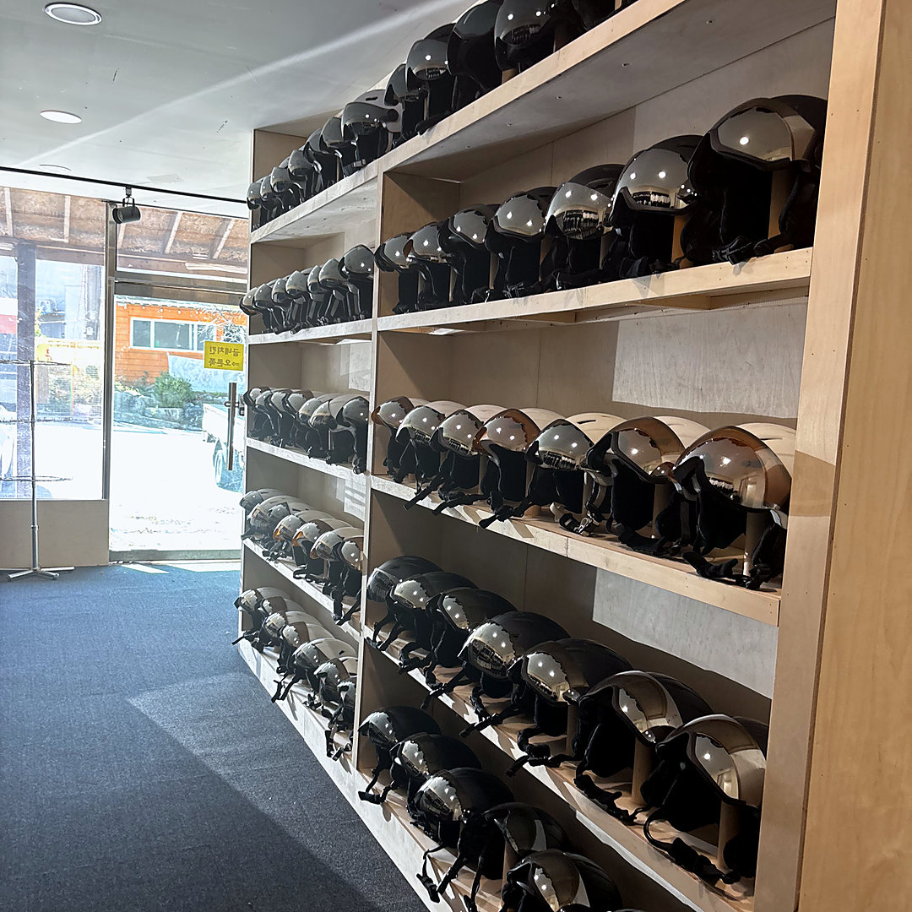
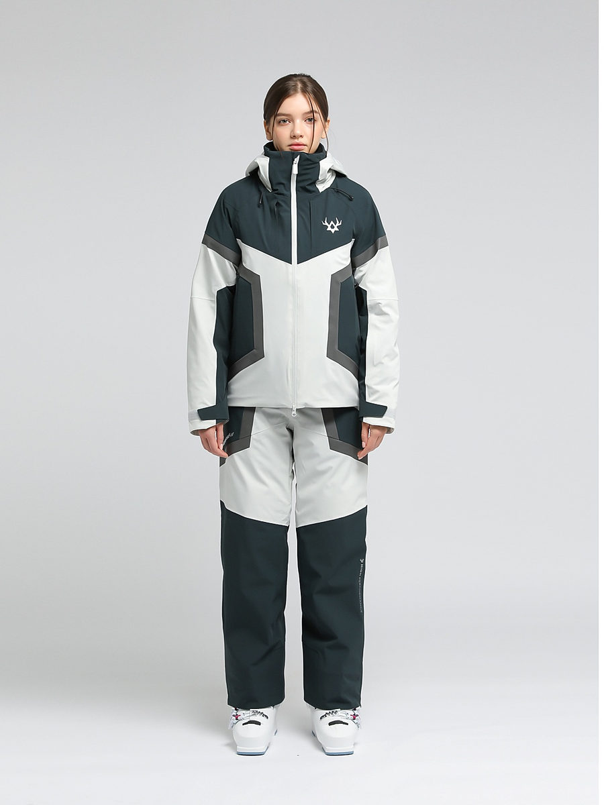
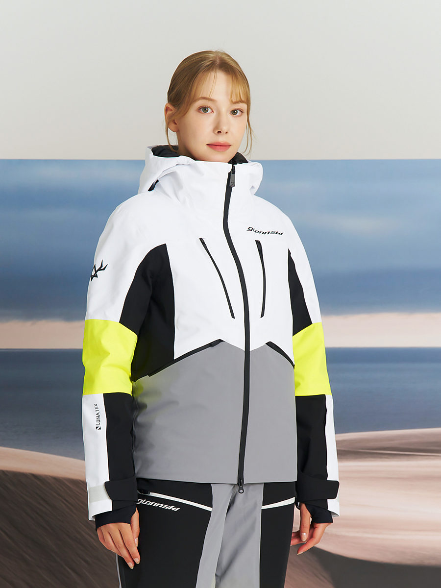
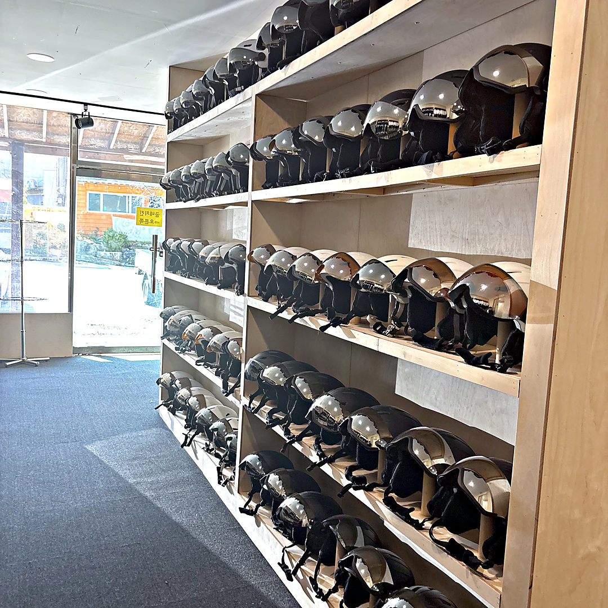

Slope Hours · 2026/27
무주리조트 스키장 운영시간과 야간스키 (2026/27)

무주덕유산리조트 스키장은 주간 09:00~16:30, 야간 18:30~22:00에 운영합니다. 날짜에 따라 새벽(07:00~09:00)과 자정(22:00~24:00) 운영도 있고, 3월 3일부터 주간은 09:30~16:00으로 바뀝니다. 날짜별 운영 여부는 공식 운영 캘린더에서 확인하세요.
- 주간09:00~16:30
- 야간18:30~22:00
- 새벽07:00~09:00
- 자정22:00~24:00
운영시간은 무주덕유산리조트 스키장 운영 캘린더를 2026년 11월 23일에 확인한 내용입니다. 리조트는 일정이 슬로프 상황에 따라 바뀔 수 있다고 안내합니다. 2026/27 시즌은 11월 27일(금) 오픈 예정이며, 자세한 내용은 개장일 안내에 정리했습니다.
시간대별 운영시간은 어떻게 되나요?
| 구분 | ~3월 2일 | 3월 3일부터 |
|---|---|---|
| 새벽 | 07:00~09:00 | 날짜별 확인 |
| 주간 | 09:00~16:30 | 09:30~16:00 |
| 야간 | 18:30~22:00 | 날짜별 확인 |
| 자정 | 22:00~24:00 | 날짜별 확인 |
공식 캘린더에는 3월 3일 이후 주간 시간 변경만 따로 적혀 있습니다. 새벽·야간·자정은 날짜마다 운영 여부가 달라서 캘린더의 날짜별 표시를 보고 정하는 게 정확합니다.
날짜별 운영 여부는 어디서 확인하나요?
운영 캘린더는 날짜마다 새벽·주간·야간·자정 운영 여부를 표시합니다. 2026년 11월 23일 확인 기준으로 11월과 12월 칸은 아직 비어 있어, 개장 후 날짜별 표시가 올라오면 다시 확인해야 합니다. 개장 직후에는 운영 슬로프와 시간대가 적을 수 있으니 전날 저녁에 한 번 더 보세요.
주간과 야간을 이어서 탈 수 있나요?
주간은 16:30에 끝나고 야간은 18:30에 시작해서 사이에 2시간이 빕니다. 이 시간에 식사와 휴식을 하고, 젖은 장갑이나 양말을 바꾸면 야간을 더 편하게 탈 수 있습니다. 리프트권은 실제로 탈 시간에 맞춰 고르세요. 시간권 요금은 리프트권 할인 안내에서 비교할 수 있습니다.
대중교통으로 야간스키를 타면 몇 시에 나와야 하나요?
리조트 무료 셔틀 막차는 21:10에 리조트를 출발해 무주관광안내소 P1 주차장에 22:07 도착합니다. 야간 운영은 22:00까지지만 셔틀로 돌아가려면 21시 전에 장비를 반납하고 탑승장으로 가야 합니다. 들어올 때는 16:30 P1 주차장 출발, 17:00 리조트 도착 셔틀이 야간 시간과 맞습니다. 전체 시간표는 셔틀버스 시간표에서 확인하세요.
시간대별로 무엇을 챙기면 좋나요?
- 새벽·주간
아침 기온이 낮으니 얇은 옷을 여러 겹 입고, 해가 나면 눈 반사가 강해 고글이나 선크림을 챙기세요. - 야간
해가 지면 기온이 더 내려갑니다. 장갑과 넥워머, 핫팩을 챙기고 렌즈가 밝은 고글이 편합니다. - 주간에서 야간으로 이어 탈 때
쉬는 시간에 젖은 장갑·양말을 갈아 신을 수 있게 여분을 준비하세요.
빠뜨린 장갑·양말·핫팩은 매장에서 살 수 있습니다. 챙길 물건 전체는 준비물 체크리스트에 정리했습니다.
렌탈샵은 몇 시부터 몇 시까지 여나요?
무주놀러와스키샵은 08:00부터 24:00까지 운영합니다. 주간 운영 시작(09:00) 1시간 전에 문을 열고, 자정 운영이 끝나는 24:00까지 열려 있어 주간·야간·자정 일정 모두에 맞출 수 있습니다. 새벽 운영(07:00~09:00)을 탈 계획이라면 매장이 문을 열기 전이니 전화나 카카오톡으로 먼저 문의하세요. 매장에는 무료로 주차할 수 있고, 셔틀·버스로 리조트 근처에 내리면 픽업해 드립니다.
몇 시에 와도 장비를 바로 받을 수 있나요?
무주놀러와스키샵은 덕유산리조트 정문 앞에 있습니다. 예약할 때 방문 시간을 적어 두면 주간이든 야간이든 도착해서 사이즈만 맞추고 바로 슬로프로 갈 수 있어요.




- 매장 운영 08:00~24:00주간부터 자정 스키까지 시간에 맞춰 장비를 받습니다.
- 풀세트 40,000원장비·의류·헬멧·고글을 한 번에 빌리는 오픈 한정가입니다.
- 리프트권 13,000~25,000원 할인3·4·6시간권을 렌탈과 함께 예약하면 할인가가 바로 적용됩니다.
- 무료 주차자가용으로 와도 주차 걱정 없이 렌탈을 받습니다.
- 리조트 근처 픽업셔틀·버스로 리조트 근처에 내리면 연락 주세요. 매장에서 데리러 갑니다.
- 장갑·양말·핫팩 현장 구매위생상 대여하지 않는 장갑·양말과 핫팩을 매장에서 판매합니다.
자주 묻는 질문
무주리조트 스키장 운영시간은 어떻게 되나요?
공식 운영 캘린더 기준 주간 09:00~16:30, 야간 18:30~22:00입니다. 날짜에 따라 새벽 07:00~09:00, 자정 22:00~24:00 운영도 있습니다.
3월에는 운영시간이 바뀌나요?
네. 3월 3일(화)부터 주간 운영시간이 09:30~16:00으로 바뀝니다.
무주리조트 야간스키는 몇 시까지인가요?
야간은 18:30부터 22:00까지입니다. 자정 운영이 있는 날은 22:00~24:00에도 탈 수 있으니 운영 캘린더에서 날짜별로 확인하세요.
야간스키 후 셔틀 막차는 몇 시인가요?
리조트 무료 셔틀 막차는 21:10에 리조트를 출발해 무주관광안내소 P1 주차장에 22:07 도착합니다.
야간에도 렌탈 예약이 되나요?
네. 무주놀러와스키샵은 08:00부터 24:00까지 운영해서 야간 스키 시간에도 장비를 빌릴 수 있습니다. 예약 화면에서 저녁 방문 시간을 고르면 됩니다.